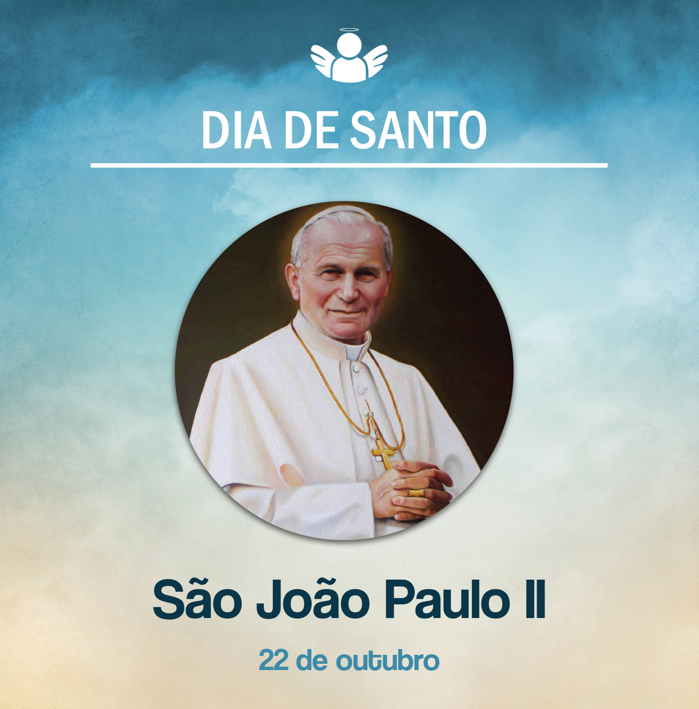

São João Paulo II
22 de outubro de, 2020
Karol Jósef Wojtyła nasceu na cidade de Wadowice, na Polônia, no dia 18 de maio de 1920. A mãe morreu quando ele tinha apenas 8 anos. Depois perdeu também o irmão mais velho. Wojtyła estudou na escola Marcin Wadowita. Em 1938, mudou-se para Cracóvia e realizou seus estudos superiores na Universidade Jaguelônica e numa escola de teatro. Quando, na Segunda Guerra Mundial, os nazistas invadiram Polônia, a universidade foi fechada, e Karol foi obrigado a trabalhar.
O pai, Karol Wojtyła, um suboficial do exército polonês, morreu de um ataque do coração em 1941. Um ano depois desse acontecimento, sentindo o chamado a ser padre, Karol entrou no seminário de Cracóvia. Devido à situação, teve de estudar clandestinamente.
Quando a Guerra acabou, seguiu seus estudos na Faculdade de Teologia da Universidade Jaguelônica. Foi ordenado padre em 1º de novembro de 1946. Doutorou-se em Teologia na Universidade Católica de Lublin.
Em 1958, foi nomeado bispo auxiliar de Cracóvia. Exerceu o ministério de capelão universitário e professor de Ética em Cracóvia e Lublin. No ano de 1964, foi eleito arcebispo de Cracóvia e, em 1967, o Papa Paulo VI o fez cardeal. Finalmente, em 16 de outubro de 1978, foi eleito o 264º Papa da Igreja. Sucessor de João Paulo I, ele adotou o nome de João Paulo II.
Três anos tinham-se transcorrido de seu pontificado quando sofreu uma tentativa de assassinato. Era o dia 13 de maio de 1981, quando, ao entrar na Praça de São Pedro, no Vaticano, foi atingido por tiros, ficando gravemente ferido.
João Paulo II foi um intelectual célebre entre seus conhecidos. Escreveu duas obras de poesia e, sob o pseudônimo de Andrzej Jawien, escreveu uma peça de teatro, “A loja do ourives”, em 1960. Os seus escritos éticos e teológicos incluem “Amor frutuoso e responsável” e “Sinal de contradição”, ambos publicados em 1979. Escreveu ainda 14 encíclicas, 15 exortações apostólicas, 11 constituições apostólicas e 44 cartas apostólicas.
Foi um viajante incansável, por isso uma grande marca de seu pontificado foram as inúmeras visitas pastorais que realizou. Ele próprio se expressou sobre as viagens, dizendo: “O Papa viaja para anunciar o Evangelho, para ‘confirmar os seus irmãos’ na fé, para consolidar a Igreja, para encontrar o homem”. Nessas viagens, e em geral, os meios de comunicação o favoreciam, outorgando-lhe um caráter midiático, o que o fez o personagem mais aplaudido e seguido em seu tempo.
O Papa contribuiu para a restauração da democracia e liberdades religiosas no Leste da Europa, sobretudo na Polônia. No interior da Igreja, reafirmou os ensinamentos católicos romanos contra a homossexualidade, aborto e métodos “artificiais” de reprodução humana e controle da natalidade, assim como a defesa do celibato dos padres e a determinação da não ordenação das mulheres.
Com seu singular sorriso, João Paulo II, ofereceu sua vida a Deus e à Igreja, mesmo na sua doença de Parkinson. Morreu em 2 de abril de 2005. Foi canonizado em 2014, poucos anos depois de seu falecimento. Pela comemoração dos 100 anos de nascimento de Karol Wojtyła, o Papa Francisco convidou-nos a recordá-lo como “Uma grande testemunha da misericórdia de Deus”.
Que São João Paulo II rogue a Deus por nós, para que sejamos cristãos da misericórdia. Amém!